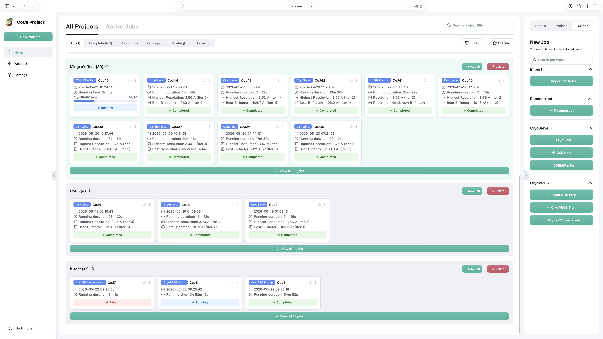
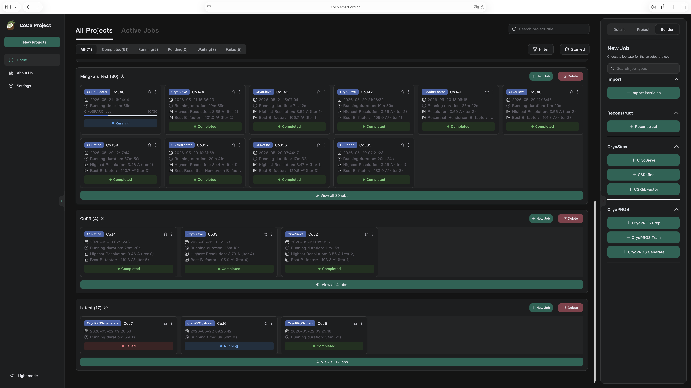

01
CryoSieve
Particle sorting and sieving for single-particle cryo-EM. CryoSieve helps remove unnecessary particles from final stacks so reconstruction quality can improve.
Cryo-EM workflow copilot
CoCo acts as a copilot for your cryo-EM workflow, integrating CryoSieve, CryoPROS, and CTFA directly into the process you already run.


Particle sorting and sieving for single-particle cryo-EM. CryoSieve helps remove unnecessary particles from final stacks so reconstruction quality can improve.
A preferred-orientation correction framework for single-particle cryo-EM, using AI-generated auxiliary particles and co-refinement.
Reserved for the CTFA module. It appears in the CoCo system model as a planned capability and is marked TBD until public details are ready.
CoCo is the only download target on this page. CryoSieve, CryoPROS, and CTFA are accessed through CoCo, not as standalone downloads.
Public CoCo installer link pending.
"A minority of final stacks yields superior amplitude in single-particle cryo-EM"
Nature Communications, 2023If CryoSieve contributes to your work, please cite the paper above. Full demo datasets and expected results are available at cryosieve-demos.
"CryoPROS: Correcting misalignment caused by preferred orientation using AI-generated auxiliary particles"
Nature Communications, 2025If CryoPROS contributes to your work, please cite the paper above.
CoCo wrapped module
An advanced particle sorting and sieving solution for single-particle cryo-EM analysis. CryoSieve eliminates unnecessary particles from final stacks, producing cleaner density maps with measurably higher resolution.
v1.3.0
CryoSieve is an advanced software solution designed for particle sorting and sieving in single-particle analysis for cryo-EM. Supported by extensive experimental results, it has demonstrated superior performance compared to other cryo-EM particle sorting algorithms. For certain datasets, the precision of CryoSieve's particle subset selection approaches the theoretical limit.
Validated on publicly available cryo-EM datasets from EMPIAR:
| Dataset | Particles | Mass (kDa) | Source |
|---|---|---|---|
| TRPA1 | 43,585 | 688 | EMPIAR-10024 |
| Hemagglutinin | 130,000 | 150 | EMPIAR-10097 |
| LAT1 | 250,712 | 172 | EMPIAR-10264 |
| pfCRT | 16,905 | 102 | EMPIAR-10330 |
| TSHR-Gs | 41,054 | 125 | EMPIAR-11120 |
| TRPM8 | 42,040 | 513 | EMPIAR-11233 |
| Apoferritin | 382,391 | 440 | EMPIAR-10200 |
| Streptavidin | 23,991 | 52 | EMPIAR-10269 |
The sieving process involves iterative rounds of 3D reconstruction and particle filtering. In each round, CryoSieve analyzes the reconstructed density map, identifies particles that degrade the final resolution, and removes them. The high-pass cutoff frequency typically increases with each iteration, progressively refining the particle subset.

"A minority of final stacks yields superior amplitude in single-particle cryo-EM"
Nature Communications, 2023If CryoSieve contributes to your work, please cite the paper above. Full demo datasets and expected results are available at cryosieve-demos.
CryoSieve operates as a wrapped analysis module inside the CoCo unified GUI. Open it from the CoCo workbench, point it at your particle stack, and let it sieve while you continue working on other parts of your pipeline. The module integrates with Relion for 3D reconstruction and postprocessing, and supports CryoSPARC refinement workflows.
CoCo wrapped module
A preferred-orientation correction framework for single-particle cryo-EM, using AI-generated auxiliary particles and co-refinement of synthesized and experimental data.
v1.0.1
CryoPROS addresses misalignment errors caused by preferred orientation in single-particle cryo-EM. It uses AI to generate auxiliary particles and performs co-refinement between synthesized and experimental data, correcting orientation bias that would otherwise degrade reconstruction.
CryoPROS uses AI to generate auxiliary particles that compensate for preferred-orientation bias during cryo-EM reconstruction. These synthetic particles are co-refined with experimental data, producing a more isotropic orientation distribution and reducing misalignment errors.
"CryoPROS: Correcting misalignment caused by preferred orientation using AI-generated auxiliary particles"
Nature Communications, 2025If CryoPROS contributes to your work, please cite the paper above.
CryoPROS is accessed through the CoCo GUI. Launch it from the workbench, supply your particle set, and let the AI-assisted correction run alongside your existing refinement workflow.
Planned module
Reserved for the CTFA module. It appears in the CoCo system model as a planned capability and is marked TBD until public details are ready.
TBDCTFA is a planned addition to the CoCo module family. Details are forthcoming once the module reaches a public milestone. For now, it is represented in the system map so researchers know it is on the roadmap.
CTFA is represented in the CoCo system map so researchers can track the full project scope. No separate download or release is available. Check back for updates.